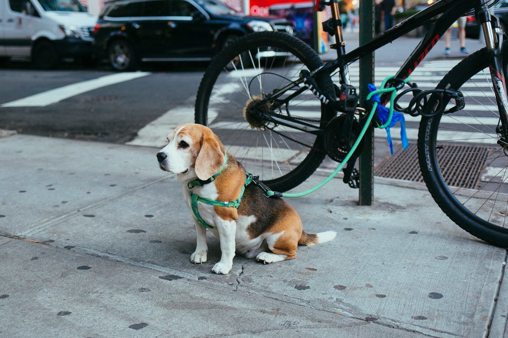

big apple dogs
As in any city with a stark divide between wealth and less affluent areas, I notice the visible signs of affluence among people on the streets in various ways. In major cities, especially in wealthy neighborhoods, this is often reflected pet ownership. It's not just about the pet itself, but the entire infrastructure surrounding it. There are specialty delicatessens for dogs, special menu items in ice cream shops or coffee shops just for dogs, such as a “puppuccino” or a scoop of ice cream for the beloved family member.
Then there are dog groomers, and in upscale buildings, you might even find dedicated pet spas, doggy daycares, and so on. According to NYCEDC there are 600,000 dogs in the city. What particularly stood out to me in my neighborhood, the Upper West Side, were all the poodles. This made me wonder which dog breeds are most popular in which parts of the city, so I decided to visualize this data. My map shows the most popular dog breed by zip code in NYC.
most popular breeds across nyc
It seems especially around large parks, like Central Park or Prospect Park, Labradors are very popular, so larger dogs. That also makes sense considering the space to run around. The data itself comes from NYC Open Data. Unfortunately, for many dogs, the breed is not specified and is instead listed as "unknown." Therefore, this map is only partially reliable. It reflects the current state of the available data, but reality may, of course, differ.
A study from Denmark shows: dog ownership was not found to be linked with income, education, or occupation when life course and lifestyle factors were taken into account. But people with higher income are more likely to own a dog from a breeder.
Of the highest income group in the study, 69% of dogs come from breeders, while in the lowest income group, it is only 43%. Mixed-breed dogs are more common in the lowest income group (32%) and less common in the highest income group (8%).
Dogs evolved from wolves and were domesticated by humans between 20,000 and 40,000 years ago during the Stone Age. This process likely began when some wolves became less aggressive and started scavenging near human settlements, leading to a mutually beneficial relationship. Genetic studies suggest dogs were domesticated either once in a single region or possibly independently in Europe and East Asia
I wondered what the most popular names for dogs in NYC are. In this following table you can look for your dog's name or your own name and see how many dogs have been licensed with the same name. You'll find 158 dogs called Khaleesi, 2,218 dogs called Rosie and 4,841 dogs called Lola. The most popular names are Bella and Max.